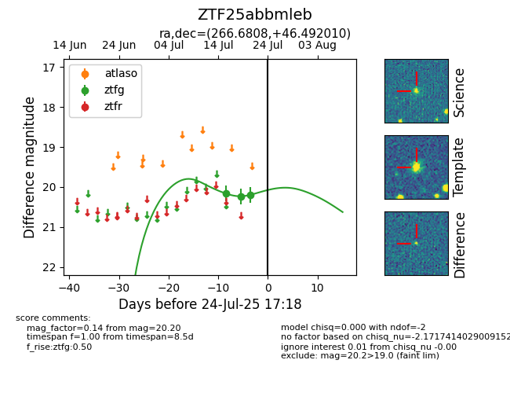

Target ZTF25abbmleb at 2025-07-24 17:18, see:
FINK: fink-portal.org/ZTF25abbmleb
Lasair: lasair-ztf.lsst.ac.uk/objects/ZTF25abbmleb
ALeRCE: alerce.online/object/ZTF25abbmleb
alt names
ZTF25abbmleb (ztf,fink)
coordinates:
equatorial (ra, dec) = (266.6808,+46.49201)
galactic (l, b) = (73.0950,+30.09523)
photometry
last ztfg=20.20
3 ztfg detections
